コンテンツ管理画面CaviNetの操作でお困りのことがあれば、このページを参照してください。
また、このページを参照しても問題が解消されない場合はお問い合わせください。
※以下で表示している画像は操作時の画面と多少異なる場合があります。
- 登録されている音声の確認方法
- 登録されているテキスト・写真を確認する方法
- 音声ガイドの案内場所の順番を変更したい場合
- インフォメーションの案内場所の順番を変更したい場合
- 音声ガイドの案内場所を追加したい場合
- 音声ガイドの案内場所を削除したい場合
- インフォメーションの案内場所を追加したい場合
- インフォメーションの案内場所を削除したい場合
- 音声データを変更したい場合
- 音声データを削除したい場合
- テキスト・写真を変更したい場合
- テキスト・写真を削除したい場合
基本操作
- 表が表示されない
- 音声・テキスト・写真の変更が反映されていない場合
- 編集・追加・削除ボタンを押しても反応しない場合
動作がおかしいと思ったら
- マニュアルをダウンロードする
リンク
画面説明
音声ガイドの画面説明
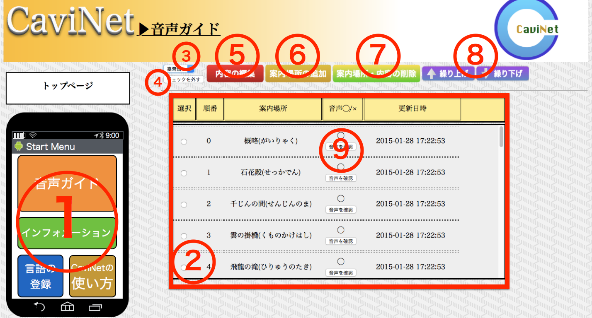①各ページに移動することができます。
②登録されているデータが表示されます。
③表示する言語を変更することができます。
④表のチェックを外すことができます。
⑤登録されているデータを変更することができます。
⑥選択している言語にデータを追加することができます。
⑦登録されているデータを削除することができます。
⑧案内場所の順番を変更することができます。
⑨登録されている音声データをダウンロードすることができます。
インフォメーションページの画面説明
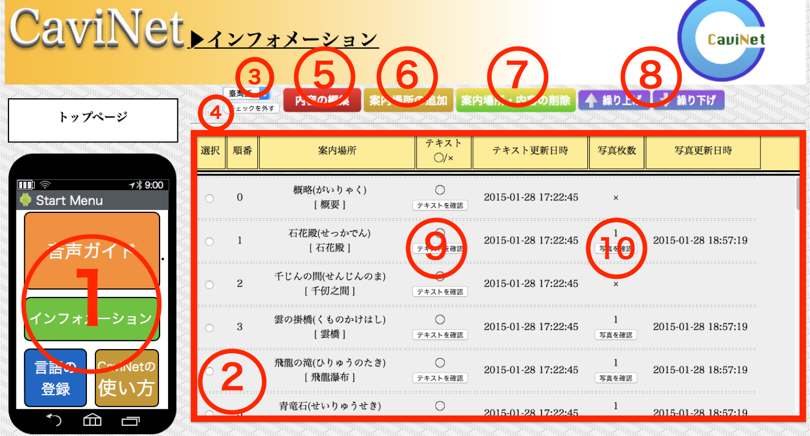①各ページに移動することができます。
②登録されているデータが表示されます。
③表示する言語を変更することができます。
④表のチェックを外すことができます。
⑤登録されているデータを変更することができます。
⑥選択している言語にデータを追加することができます。
⑦登録されているデータを削除することができます。
⑧案内場所の順番を変更することができます。
⑨登録されているテキストデータを確認、ダウンロードすることができます。
⑩登録されている写真データを確認、ダウンロードすることができます。
言語登録の画面説明

①各ページに移動することができます。
②登録されている言語が表示されます。
③表のチェックを外すことができます。
④言語の名前を変更することができます。
⑤新しい言語を追加することができます。
⑥登録されている言語を削除することができます。
基本操作
登録されている音声の確認方法
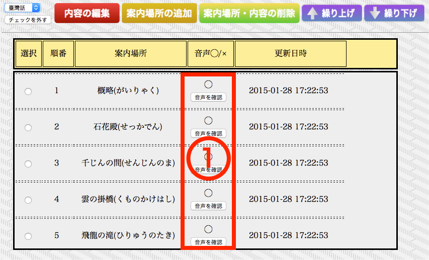①音声データが登録されている場合、「音声を確認」ボタンをクリックすると確認することができます。
登録されているテキスト・写真の確認方法
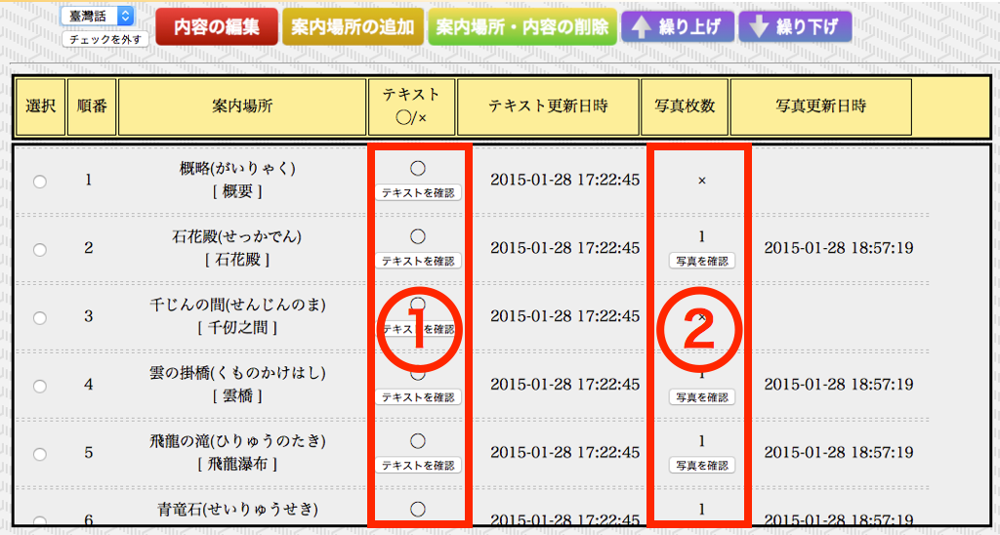①テキストデータが登録されている場合、「テキストを確認」ボタンをクリックすると確認することができます。
②写真データが登録されている場合、「写真を確認」ボタンをクリックすると確認することができます。
音声ガイドの案内場所の順番を変更したい場合
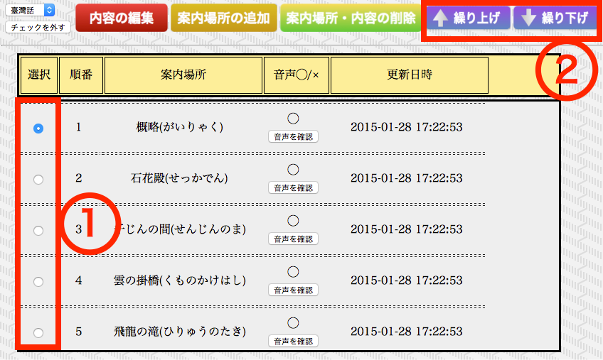①入れ替えたい項目を選択してください。
②「繰り上げ」ボタンをクリックすると、上の項目と入れ替えることができます。同様に、「繰り下げ」ボタンをクリックすると、下の項目と入れ替えることができます。
インフォーメーションの案内場所の順番を変更したい場合
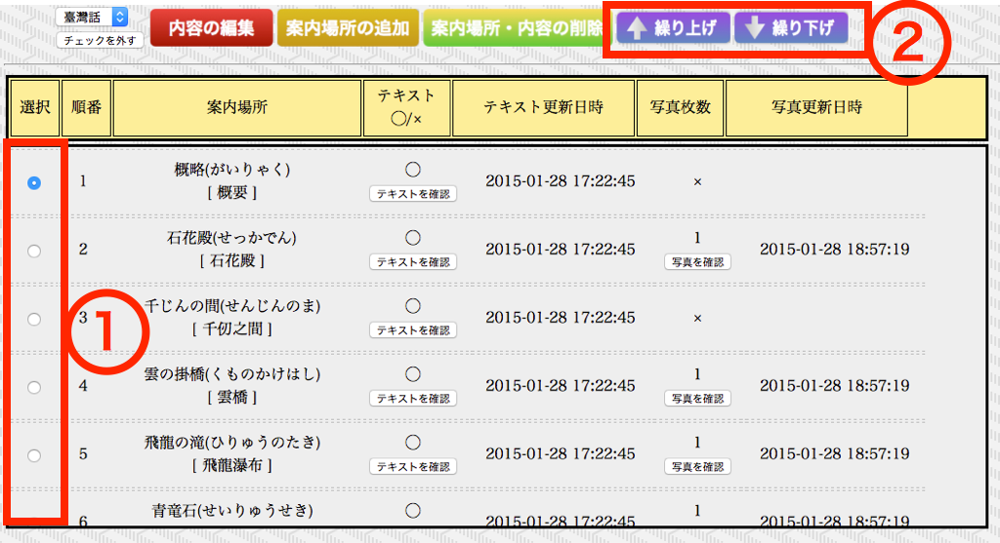①入れ替えたい項目を選択してください。
②「繰り上げ」ボタンをクリックすると、上の項目と入れ替えることができます。同様に、「繰り下げ」ボタンをクリックすると、下の項目と入れ替えることができます。
音声ガイドの案内場所を追加したい場合
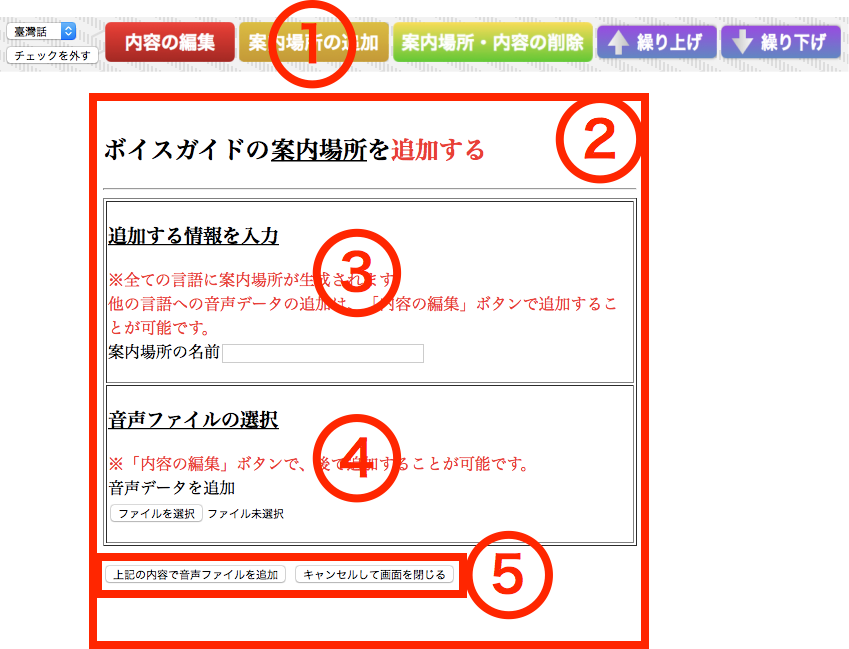①音声ガイド画面において、「案内場所を追加」ボタンをクリックすると、別ウィンドウ②が表示されます。
②このウィンドウが表示されていると、元の画面の操作を行うことはできません。追加を完了するか、キャンセルボタンをクリックすることで閉じることができます。
③案内場所の名前を記述してください。日本語で入力してください。
④音声ガイドに登録する音声データを選択してください。
⑤「上記の内容で追加」ボタンをクリックすると、音声ガイドにおいて案内場所を登録することができます。キャンセルボタンをクリックすることで閉じることができます。音声データはあとから変更することが可能です。
音声ガイドの案内場所を削除したい場合
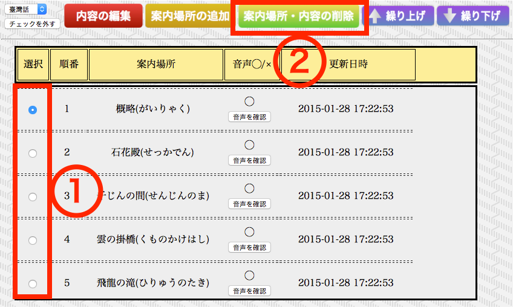 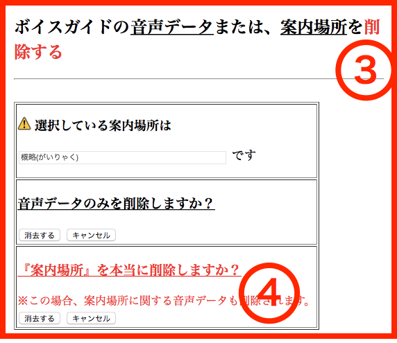①削除したい項目を選択してください。
②インフォメーション画面において、「案内場所・内容の削除」ボタンをクリックすると、別ウィンドウ③が表示されます。
③このウィンドウが表示されていると、元の画面の操作を行うことはできません。削除を完了するか、キャンセルボタンをクリックすることで閉じることができます。
④「消去する」ボタンをクリックすると、選択された案内場所の項目を削除することができます。項目に登録されていたテキスト・写真データも削除されるため注意してください。
インフォメーションの案内場所を追加したい場合
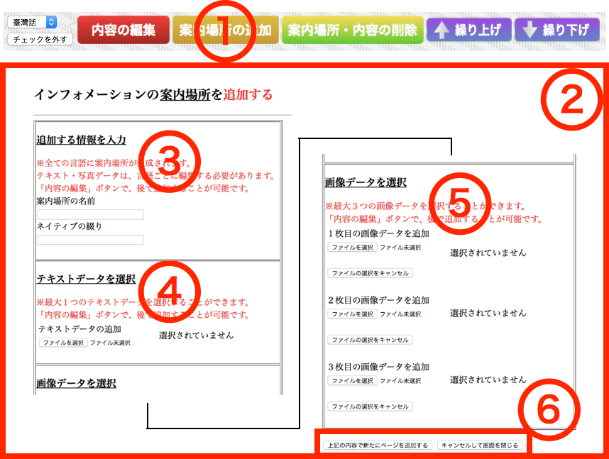①インフォメーション画面において、「案内場所を追加」ボタンをクリックすると、別ウィンドウ②が表示されます。
②このウィンドウが表示されていると、元の画面の操作を行うことはできません。追加を完了するか、キャンセルボタンをクリックすることで閉じることができます。
③案内場所の名前を記述してください。案内場所の名前は日本語で入力し、ネイティブの綴りは選択している言語の綴りで入力してください。
④インフォメーションに登録するテキストデータを選択してください。
⑤インフォメーションに登録する写真データを選択してください。最大登録枚数は３枚です。
⑥「上記の内容で追加」ボタンをクリックすると、インフォメーションにおいて案内場所を登録することができます。キャンセルボタンをクリックすることで閉じることができます。
音声データはあとから変更することが可能です。
インフォメーションの案内場所を削除したい場合
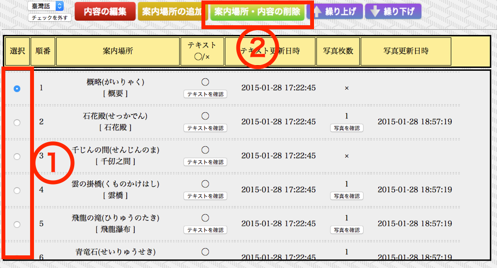 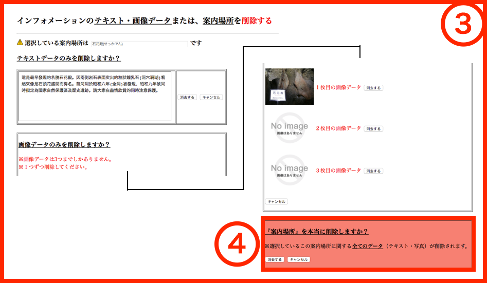①削除したい項目を選択してください。
②インフォメーション画面において、「案内場所・内容の削除」ボタンをクリックすると、別ウィンドウ③が表示されます。
③このウィンドウが表示されていると、元の画面の操作を行うことはできません。削除を完了するか、キャンセルボタンをクリックすることで閉じることができます。
④「消去する」ボタンをクリックすると、選択された案内場所の項目を削除することができます。項目に登録されていたテキスト・写真データも削除されるため注意してください。
音声データを変更したい場合
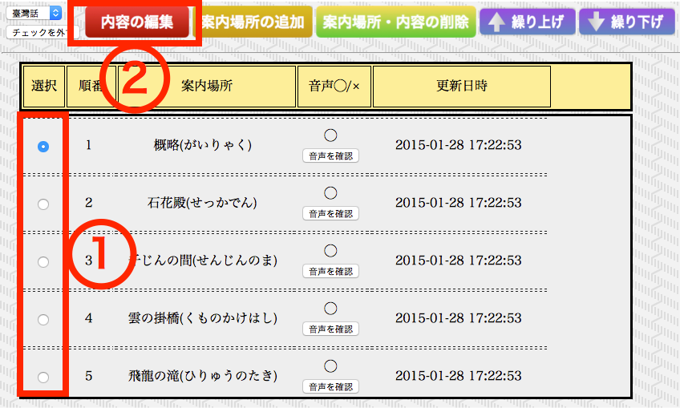 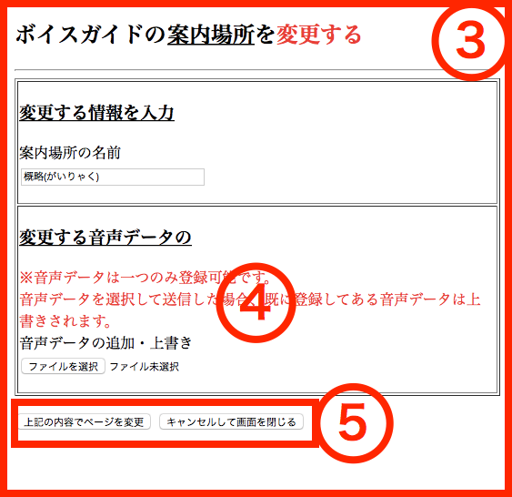①入れ替えたい項目を選択してください。
②音声ガイド画面において、「内容の編集」ボタンをクリックすると、別ウィンドウ③が表示されます。
③このウィンドウが表示されていると、元の画面の操作を行うことはできません。編集を完了するか、キャンセルボタンをクリックすることで閉じることができます。
④「ファイルを選択」ファイルを選択ボタンをクリックし、変更したい音声データを選んでください。
⑤「上記の内容でページを変更」ボタンをクリックすると、選択された案内場所に音声データを登録することができます。キャンセルボタンをクリックすることで閉じることができます。
音声データを削除したい場合
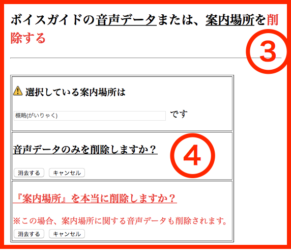①削除したい項目を選択してください。
②音声ガイド画面において、「案内場所・内容の削除」ボタンをクリックすると、別ウィンドウ③が表示されます。
③このウィンドウが表示されていると、元の画面の操作を行うことはできません。削除を完了するか、キャンセルボタンをクリックすることで閉じることができます。
④「消去する」ボタンをクリックすると、選択された案内場所の音声データを削除することができます。
テキスト・写真データを変更したい場合
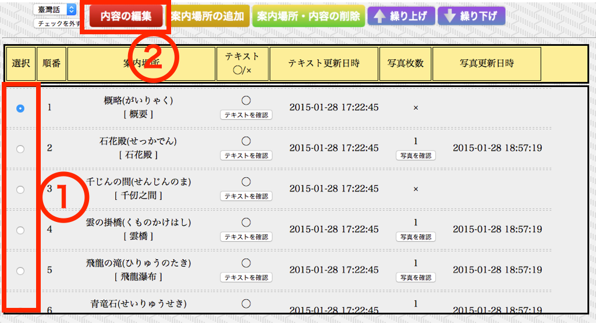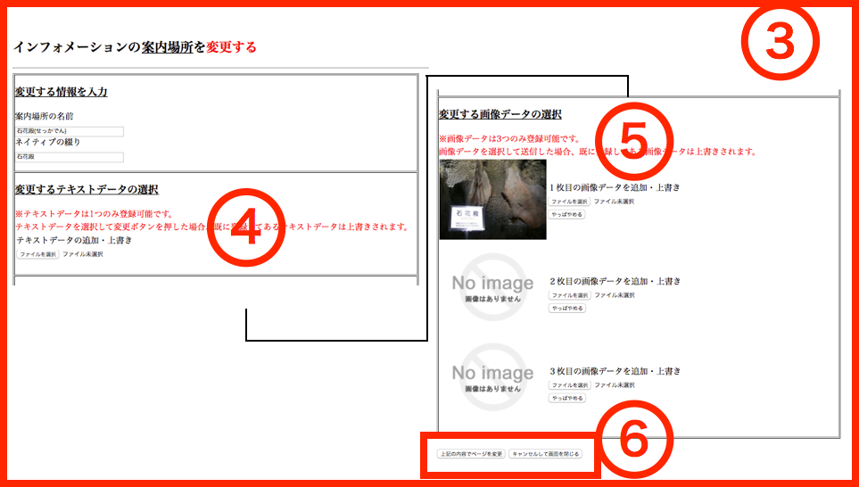
①入れ替えたい項目を選択してください。
②インフォメーション画面において、「内容の編集」ボタンをクリックすると、別ウィンドウ③が表示されます。
③このウィンドウが表示されていると、元の画面の操作を行うことはできません。編集を完了するか、キャンセルボタンをクリックすることで閉じることができます。
④「ファイルを選択」ファイルを選択ボタンをクリックし、変更したいテキストデータを選んでください。写真のみ編集の場合は選択する必要はありません。 ⑤「ファイルを選択」ファイルを選択ボタンをクリックし、変更したい写真データを選んでください。テキストのみ編集の場合は選択する必要はありません。 ⑥「上記の内容でページを変更」ボタンをクリックすると、選択された案内場所にテキスト・写真データを登録することができます。キャンセルボタンをクリックすることで閉じることができます。
テキスト・写真データを削除したい場合
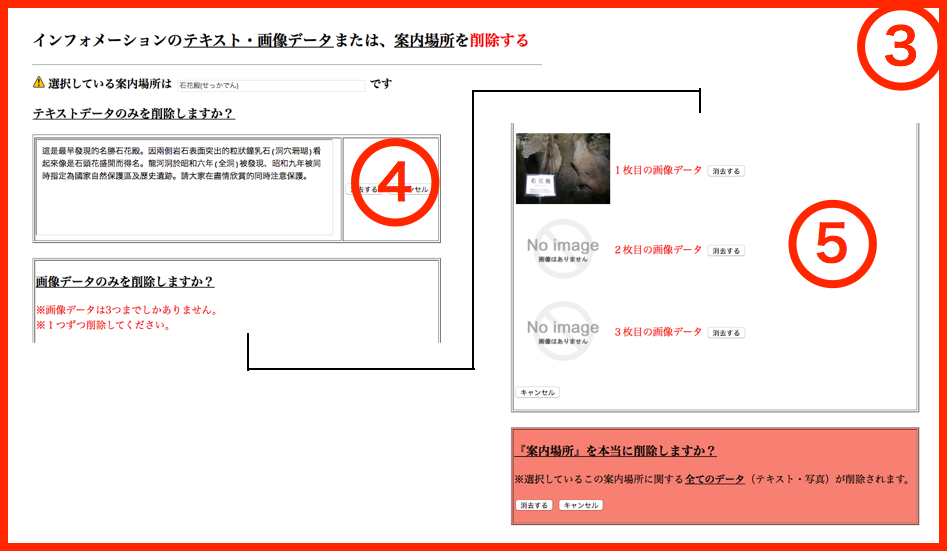①削除したい項目を選択してください。
②インフォメーション画面において、「案内場所・内容の削除」ボタンをクリックすると、別ウィンドウ③が表示されます。
③このウィンドウが表示されていると、元の画面の操作を行うことはできません。削除を完了するか、キャンセルボタンをクリックすることで閉じることができます。
④「消去する」ボタンをクリックすると、選択された案内場所の写真データを削除することができます。
⑤「消去する」ボタンをクリックすると、選択された案内場所のテキストデータを削除することができます。
動作がおかしいと思ったら
表が表示されない
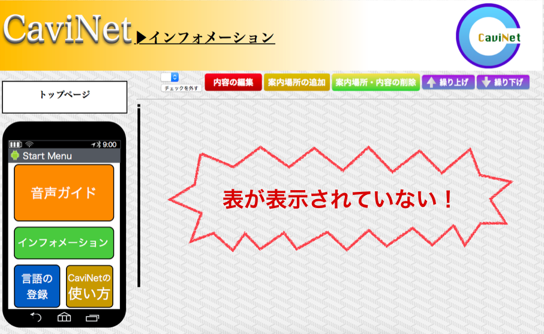上記のようにCaviNetを使用していて、一覧で表示されていた表が表示されない場合、インターネット接続が正しく行われているか確認してください。
インターネット接続を正しく行われていると確認できれた場合は「更新（またはF5キー）」を押して、再度CaviNetを開き直してください。
また、CaviNetマニュアルより推奨されるブラウザが適切であるかどうか確認してください。
推奨ブラウザは「InterNet Explorer」または「FireFox」となっています。
音声・テキスト・写真の変更が反映されていない場合
上記の問題には以下の対処法をとっていただければ正常に戻ることが確認できています。
＜対処法＞
以下はブラウザを「InterNet Explorer」で行ったときの画面操作の説明となります。

以上の画面より、①→②→③の順番にクリックしていき「閲覧の履歴の削除」を開きます。

次に、以上の画面が開くので、同じく①→②でそれぞれ「クッキーとWebサイトデータ(O)」と「履歴(H)」にチェックを付け、
③で削除を行います。これができれば、「更新（またはF5キー）」を押して、再度CaviNetを開き直してください。
編集・追加・削除ボタンを押しても反応しない場合

上記にある3種類（「内容の編集」「案内場所の追加」「案内場所・内容の削除」）のボタンを押しても反応しない場合は、
CaviNetマニュアルより推奨されているブラウザが適切であるかどうかを確認してください。
推奨ブラウザは「InterNet Explorer」または「FireFox」となっています。